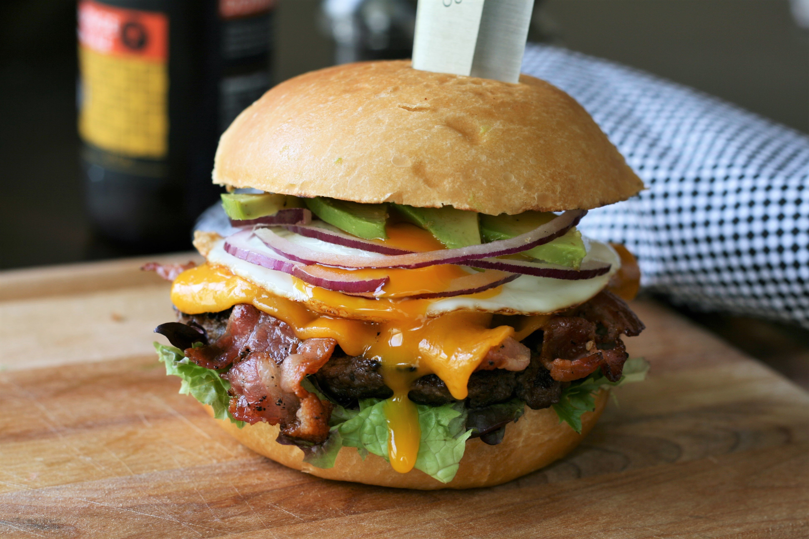

Bacon Egg and Avocado Burger

Juicy burger topped with crispy bacon, creamy avocado, and runny eggs. A flavorful, filling meal that will surely leave you craving for more. 20 minutes prep time with 25 minutes cook time for a total of 45 minutes. Serves 4.
- 3 tbsp. salted butter, softened
- 4 hamburger buns, split
- 8 slices thick-cut bacon
- 1.5 lb. lean ground beef
- 2 tbsp. Worcestershire sauce
- 1 tbsp. steak seasoning
- 4 slices cheddar cheese
- 4 large eggs
- 4 large lettuce leaves
- 1/2 red onion, thinly sliced
- 2 avocados; peeled, pitted, thinly sliced
- Preheat an outdoor grill for medium-high heat and lightly oil the grate. Butter each half of the hamburger buns.
- Place bacon in a heavy skillet and cook over medium-high heat, turning occasionally, until crisp (10 to 12 minutes).
Drain bacon slices on paper towels. Set skillet aside, reserving grease.
- Mix ground beef, Worcestershire sauce, and steak seasoning together in a large bowl (do not overmix).
Form into 4 patties. Make a thumbprint in the middle of each patty to keep it from shrinking as it cooks.
- Grill patties on preheated grill until preferred doneness, about 6 minutes per side.
An instant-read thermometer inserted into the center should read at least 160 degrees F (71 degrees C).
Top each burger with 2 bacon slices and a chedder cheese slice. Close grill lid until cheese is melted, about 1 minute.
Remove patties from grill.
- Place buns on grill, buttered-side down, and cook until browned; about 1 minute. Remove from grill, place 1 patty on bottom half of each bun.
- Reheat the bacon grease in the skillet over medium-high heat. Crack eggs into the hot skillet and fry until whites are cooked but yolk is still runny, about 4 minutes.
Immediately place 1 egg on top of each patty. Top with lettuce, onion, avocado, and remaining buns.
Return to Home